Ford Explorer ST | 2020 | 52 462 km | 400 KM
Topowa wersja ST – łączy rodzinnego SUV-a z osiągami sportowego auta. Rzadkie połączenie: 7 miejsc + 400 KM.
Co w nim dobrego:
• Silnik 3.0 V6 EcoBoost – 400 KM, bardzo dobre osiągi jak na SUV-a
• Wersja ST – sportowy wygląd + lepsze prowadzenie
• Duże, wygodne auto rodzinne z 3 rzędami siedzeń
Wyposażenie (najważniejsze):
• Duży pionowy ekran multimedialny + cyfrowe zegary
• Skórzana tapicerka + elektryczne fotele
• Kamera cofania + systemy bezpieczeństwa + tempomat
Co warto wiedzieć:
• ST to topowa wersja – dużo lepsza od zwykłych Explorerów
• Idealny kompromis: rodzinne auto + moc i wygląd
Stan:
Auto sprawne, jeżdżące
Wnętrze w dobrym stanie, bez widocznych zużyć
Brak informacji o poważnych uszkodzeniach
Lokalizacja: USA
Analiza historii pojazdu: Dostępna — przebieg, serwis, historia szkód
Szacowany zysk Pod Dom vs rynek PL: 20–50 tys. zł. Dokładną kalkulację przygotujemy indywidualnie — z rozbiciem na wszystkie koszty.
Zadzwoń: Pełna kalkulacja przed licytacją. Żadnych ukrytych kosztów po fakcie.
Wybrane oferty z Ameryki, Dubaju oraz EU publikowane są w zamkniętych grupach na WhatsApp AutoStany.
Wejdź na grupy i kliknij obserwuj, aby być na bieżąco
Grupa Zjednoczone Emiraty Arabskie(Dubaj)
https://whatsapp.com/channel/0029VbBj429JP2127CJwkg1D
Grupa Ameryka
https://whatsapp.com/channel/0029Vb7ggYbCRs1nGUnDna13
Grupa Klasyki
https://whatsapp.com/channel/0029Vb7dnC4BFLgXTc7SpS20
Grupy mają charakter selektywny.
Dostęp przyznawany jest etapami.
Jeśli chcesz dołączyć to wejdź przez wybrane linki powyżej(jeśli jest jeszcze aktywny) lub zadzwoń, poznamy się lepiej.
Tel.
——
496 opinii na 4 platformach (4.8★) · 2200+ sprowadzonych aut · https://autostany.pl/o-nas
Od wyboru auta po rejestrację w Polsce — w 4 krokach, bez niespodzianek. Szczegóły procesu importu: https://autostany.pl/wiedza/import-auta-z-usa-krok-po-kroku
Tel: AutoStany · ul. Chorągwi Pancernej 55, Warszawa · Pn–Pt 8–20 www.autostany.pl
Ogłoszenie ma charakter informacyjny i nie stanowi oferty handlowej w rozumieniu art. 66 §1 KC.
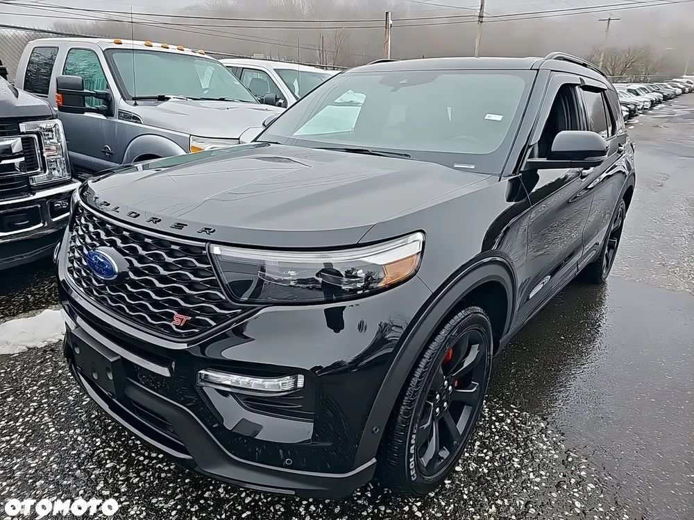
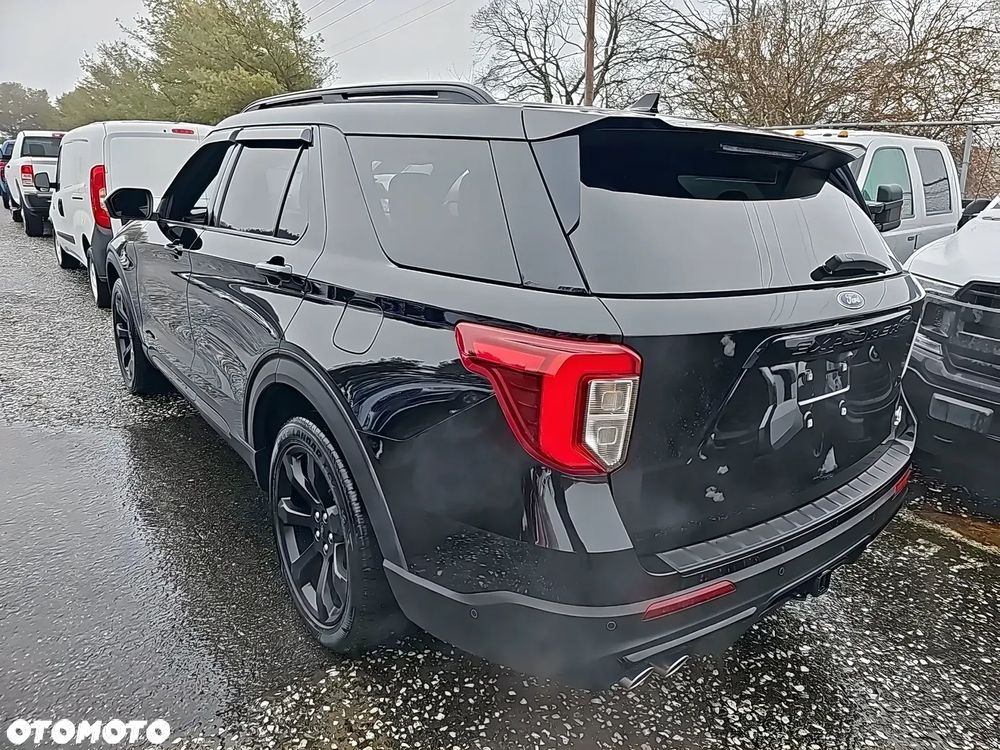
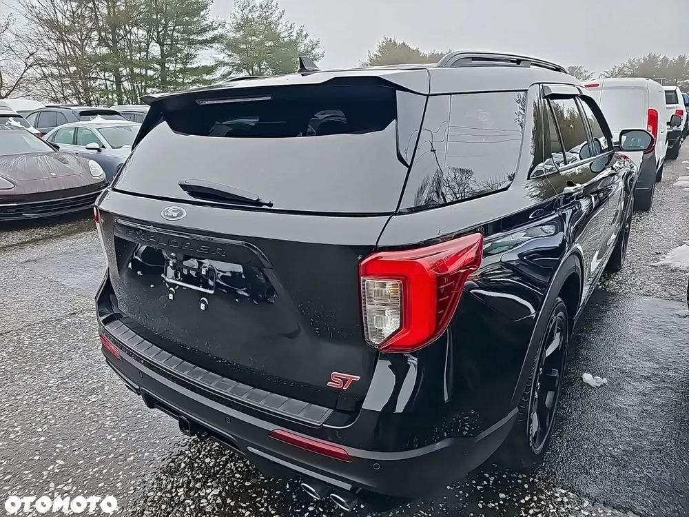
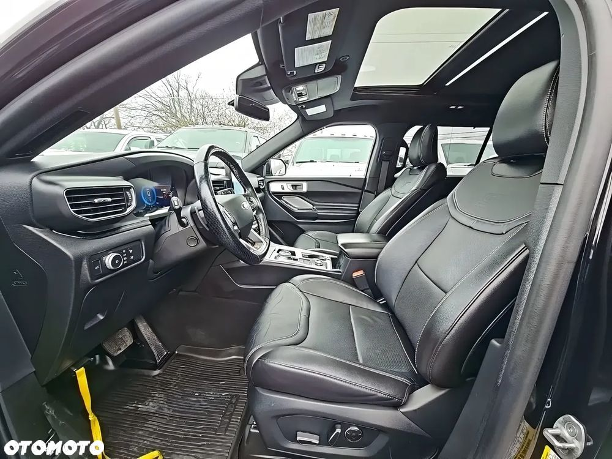
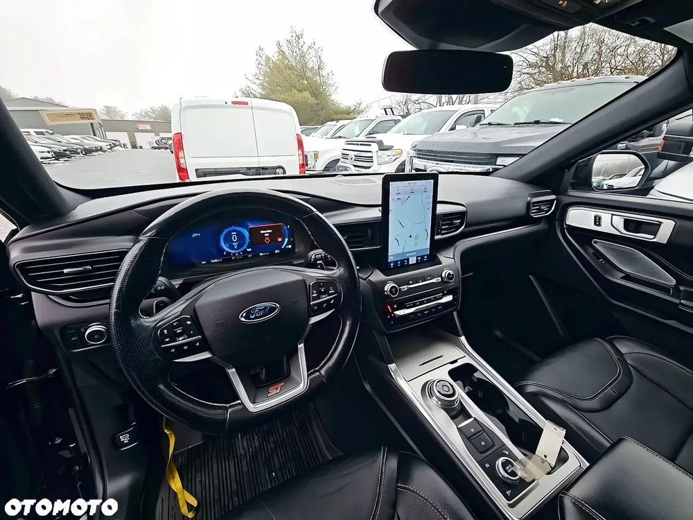
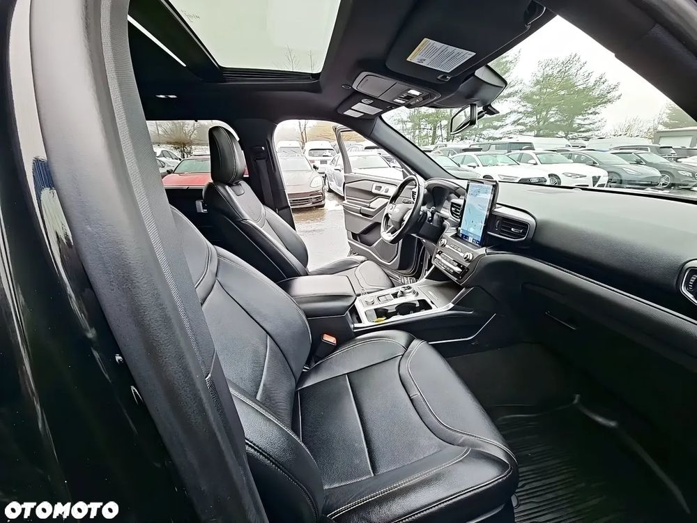
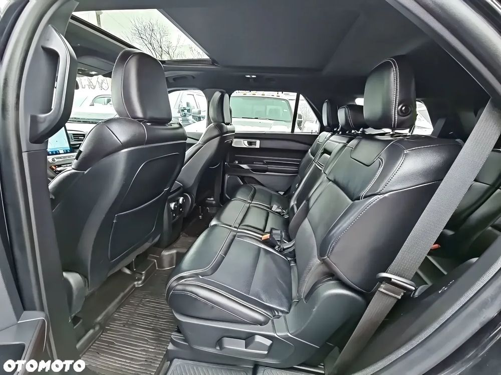
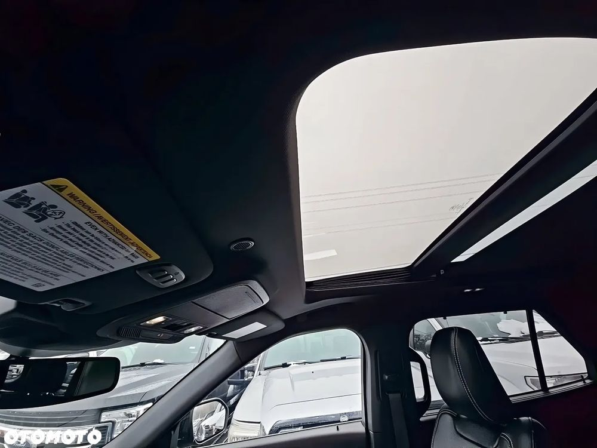
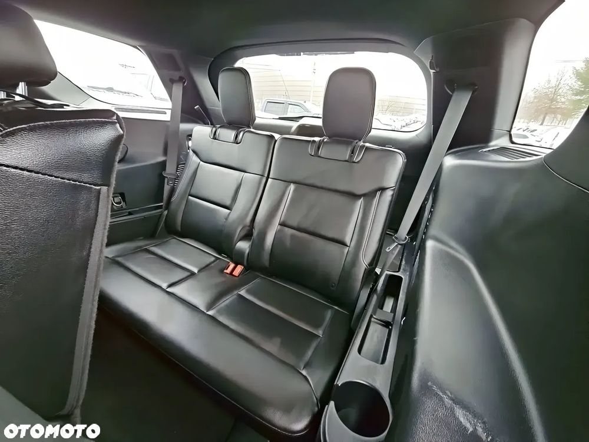
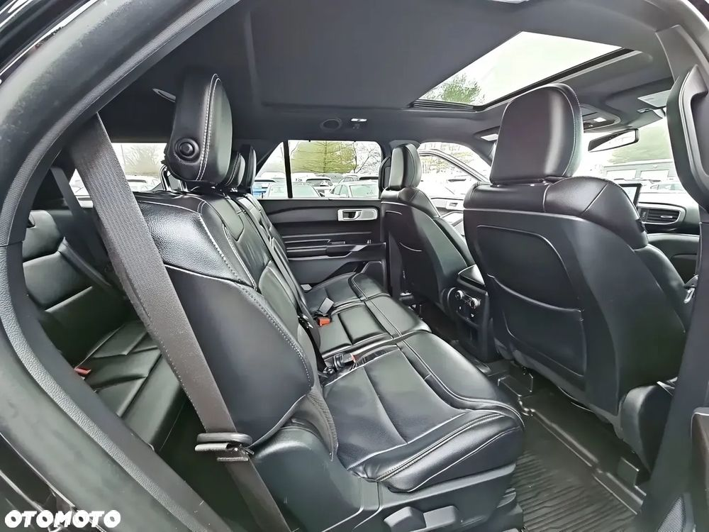
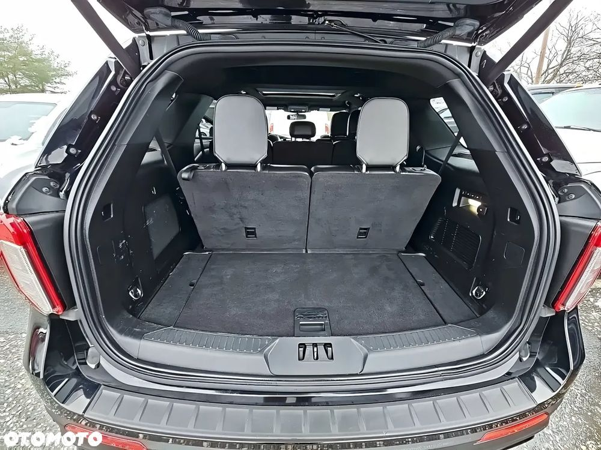
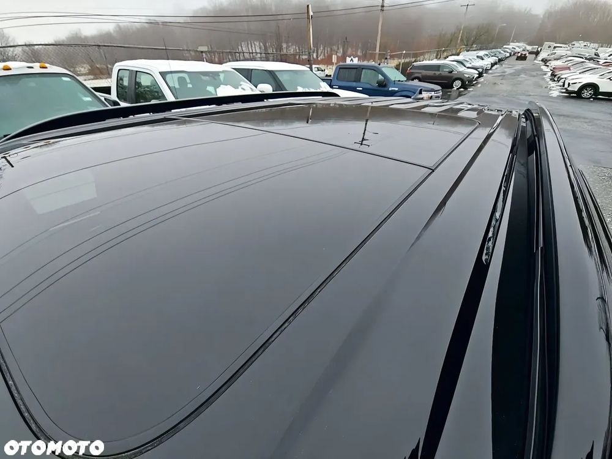